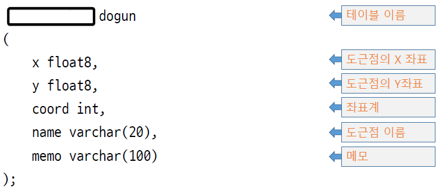

3. 공간정보 시각화
1. “유럽 석유 조사 그룹” 이란 뜻으로 전 세계 좌표체계에 코드 번호를 부여한 것은?
- PSG
- EPSG
- MPG
- OPEC
2. 데이터베이스에서 엑셀의 하나의 컬럼(세로 줄)에 해당하는 것은?
- row
- value
- field
- DBMS
3. 다음 중 데이터베이스의 스키마에 대한 설명으로 틀린 것은?
- 외부 스키마: 개발자가 사용하는 스키마
- 개념 스키마: 조직 전체의 관점에서 데이터베이스를 정의한 스키마
- 내부 스키마: 데이터베이스가 물리적 저장장치에 저장되는 방법을 기술한 스키마
- 관리 스키마: 데이터베이스의 전체 관리를 위한 스키마
4. 도근점 정보를 관리하는 테이블을 생성하려 한다. 아래 네모 친 부분에 들어갈 코드로 적절한 것은?

- create
- make
- create table
- make table
5. 위에서 만든 도근점 테이블 dogun에 자료를 하나 insert 하는 코드로 사용할 수 있는 SQL은?
insert dogun (x, y) values (10, 20);insert into dogun (x, y, coord) value (10, 20, 4326);insert into table dogun (x, y, coord) value (10, 20, 4326);insert into dogun (x, y, coord) values (10, 20, 4326);
6. 위에서 만든 도근점 테이블 dogun에 자료를 하나 insert 하는 sql문으로 불가능한 것은?
insert into dogun (x, y) values (10, 20);insert into dogun (x, y, coord) values (10, 20, 4326);insert into dogun (x, y, coord) values (10, 20, '4326');insert into dogun (x, y, coord, name) values (10, 20, 4326, '도근1');
7. 위에서 만든 도근점 테이블 dogun에 입력한 자료의 모든 필드를 확인하는 SQL문은?
select * from dogun;select all from dogun;select fields from dogun;select all_field from dogun;
8. 위에서 만든 도근점 테이블 dogun에 입력한 자료를 도근점의 이름 순으로 정렬하는 SQL문은?
select * from dogun order name;select * from dogun where order name;select * from dogun order = name;select * from dogun order by name;
9. 위에서 만든 도근점 테이블 dogun에 입력한 자료에서, 이름이 ’도근점1’인 자료의 좌표계를 5183 으로 수정하는 SQL문은?
update dogun coord=5183 where name='도근점1';update set dogun coord=5183 where name='도근점1';update dogun set coord=5183 where name='도근점1';update dogun coord=5183;
10. 위에서 만든 도근점 테이블 dogun에 입력한 자료에서, 이름이 ’도근점1’인 자료를 삭제하는 SQL문은?
delete dogun name='도근점1';delete dogun where name='도근점1';delete from dogun name='도근점1';delete from dogun where name='도근점1';